SFの実績を渡し、反響→CL→物件確定→請負の歩留まりを課別・担当別に分解
伸びた月・落ちた月の要因をAIに仮説出しさせ、元データで検算
リノベる様 ご提案書｜プラン：AI業務自動化研修／コース：リーダー・マネージャー向けAI研修｜全16スライド
AI業務自動化研修
リノベる株式会社 様御中
部長がAIで3ヵ年計画とKPIを
自ら描き、回せる組織を実現するご提案資料
プランAI業務自動化研修4ヶ月
コースリーダー・マネージャー向けAI研修全8章・35レッスン
受講者営業部長設計部長
2026年11月 ｜ バイテック法人AI研修（株式会社AI棒）
修了時：経営会議に出せる
3ヵ年計画と90日実行プラン
ご提案の要点｜この1枚でご判断いただけるように
貴社の研修目的
3ヵ年計画・戦略を、部長が自分で立案できる
計画を KPI・実行プランまで落とし込める
ご提案内容
ご費用（1名・税込）
25万円
5名 125万円／10名 250万円／15名 375万円（すべて税込）
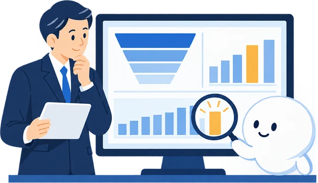
1ヶ月目現状を数字でつかむ自部門の実績をAIで要因分解し、詰まっている所を特定
成果物現状分析レポート
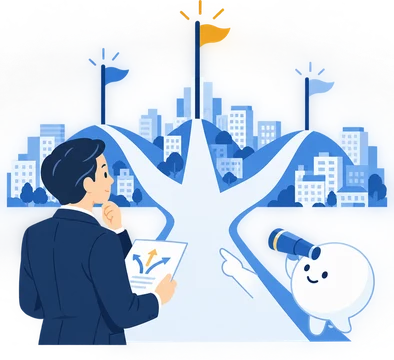
2ヶ月目3ヵ年の戦略を描く市場調査と3シナリオ比較で、3年後の姿を根拠付きで選ぶ
成果物3ヵ年計画のドラフト
KPIツリーで行動指標まで分解し、週次レポートを自動化
成果物KPIツリー・実行計画表
課ごとの目標と1on1に落とし、経営会議で承認を取る
成果物経営会議提出版＋90日実行プラン
© 株式会社AI棒 ｜ 金額はすべて税込です。
貴社の現状（事前アンケートより）
78%
がAIを「ほぼ毎日〜毎日」使っている週1〜2回が18%。ほとんど使っていないのは1名のみ
66%
が「何度か往復して質を上げられる」Lv3以上一方、ツール連携・自動化までできるLv5は5名（5%）
使っているAIツール
ChatGPT90%
Gemini63%
Claude18%
Copilot5%
メンバーは「使える」段階。使い方を計画・KPI・組織の仕組みに広げるのは、部長の役割です。
自己評価レベルの分布（91名）。Lv3が47名で最多、Lv4・Lv5は合わせて13名。
回答に挙がった声（抜粋）
進捗把握や現状把握のための数字を見える化したい施工SV課
提出見積と当社標準金額の差異をチェックし、交渉の根拠を自動で作りたい施工SV課
AIエージェントに役割を持たせてチームをつくり、動かせるようになりたいソリューションプランナー3課
© 株式会社AI棒 ｜ 出典：貴社 事前アンケート（2026年9月4日〜11日・91名回答）。割合は四捨五入。ツールは複数回答。
前提｜受講者と、率いるチームの現状（仮説）
想定する担当範囲
メンバーのAI活用レベル（自己評価）
時間がかかっている主な業務（回答から抜粋）
物件の選定・精査
管理規約・竣工図の読み込み
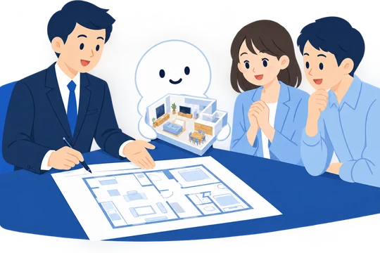
ラフプラン・資料作成
予約調整・追客メール
部長の課題：歩留まりのどこを直せば契約が伸びるかを数字で示し、5課の動きを1つの計画にそろえること
想定する担当範囲
メンバーのAI活用レベル（自己評価）
時間がかかっている主な業務（回答から抜粋）
見積の作成・チェック
図面チェック・議事録
提出物の格納確認
工事パートナーの開拓・質疑
部長の課題：案件が増えても品質と原価を守れる体制（人・パートナー・仕組み）を3年で設計すること
© 株式会社AI棒 ｜ 出典：貴社 事前アンケート（2026年9月4日〜11日・91名回答）。部長の担当範囲は所属部署名から当社が置いた仮説で、実際の組織とは異なる場合があります。
ご提案内容
PLAN｜研修プラン
AI業務自動化研修
業務プロセスそのものをAIで仕組み化する4ヶ月プラン
動画で学ぶその月の型を、空き時間に視聴
個人面談 月2回（全8回）講師と1対1。自部門の資料で計画を作り込む
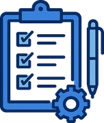
実務で作る面談の間に自部門で試し、次の面談に持ち寄る4ヶ月を選ぶ理由：3ヵ年計画のドラフトだけでなく、KPIを週次で追う仕組み（自動レポート）と、課への展開・経営承認まで期間内に終えるためです。
COURSE｜研修コース
リーダー・マネージャー向けAI研修
計画立案と人材育成にAIを使う、管理職向けのコース
STEP 01AI活用の全体理解5段階と自部署の現在地／多往復で仕事を進める
STEP 02管理職業務での活用数値分析・3シナリオの計画／戦略立案／エージェント作成
STEP 03組織への定着部下の育成・1on1／利用ルール・効果測定・90日計画
このコースを選ぶ理由：「計画を立てる」「KPIに落とす」「組織で回す」が、そのまま章立てになっているためです。
© 株式会社AI棒 ｜ プランの内容はバイテック法人AI研修の標準仕様、コースの構成は2026年11月時点のものです。
目的とカリキュラムの対応
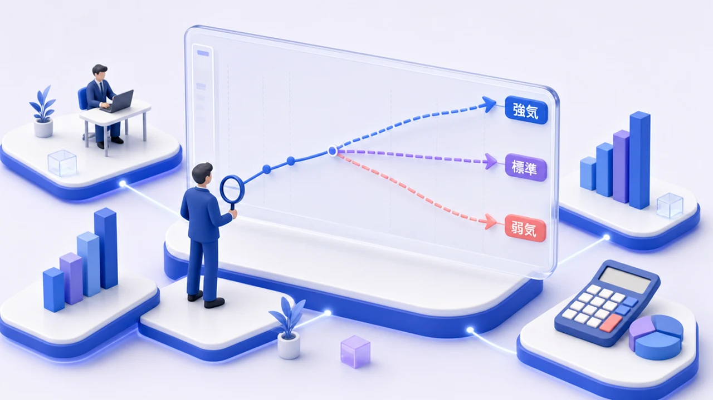
第4章｜2ヶ月目
数値分析と中期計画
実績の要因分解、前提の置き方、3シナリオの比較と感度分析、検算
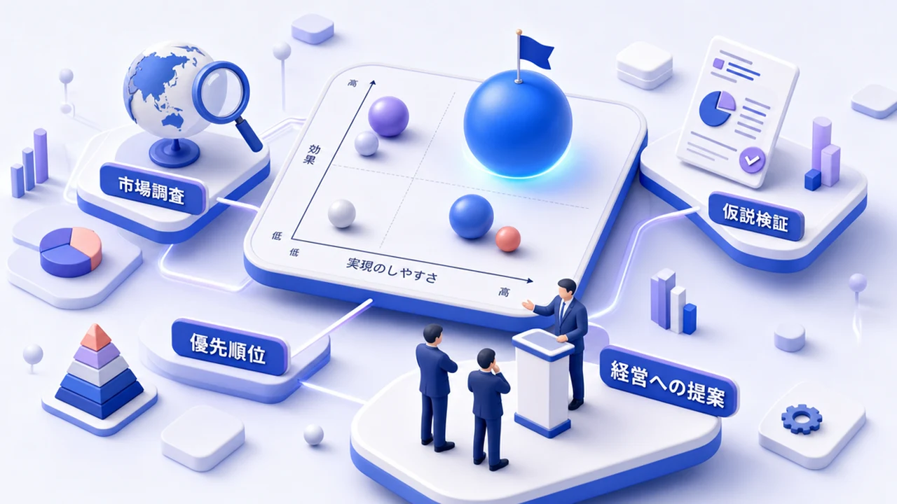
第5章｜2ヶ月目
戦略立案と施策検討
市場・競合調査、仮説の検証、反対意見の洗い出し、経営への提案
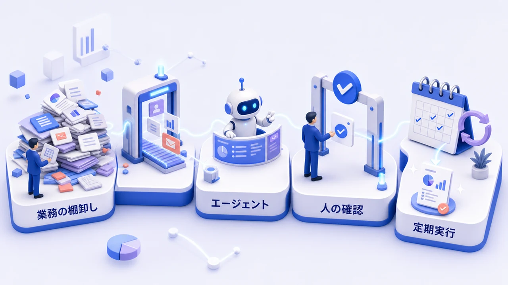
第6章｜3ヶ月目
業務を設計し直す・エージェント作成
業務の棚卸し、人が確認する点の設計、週次レポートの定期実行
第8章｜4ヶ月目
ルールと効果測定
利用ルール、承認の流れ、効果の測り方、90日計画の作成
土台と展開
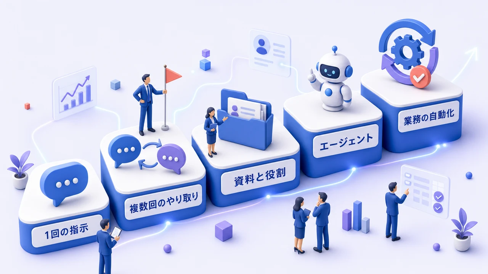
第1〜3章｜1ヶ月目AI活用の5段階・多往復で仕事を進める・専用の相談役
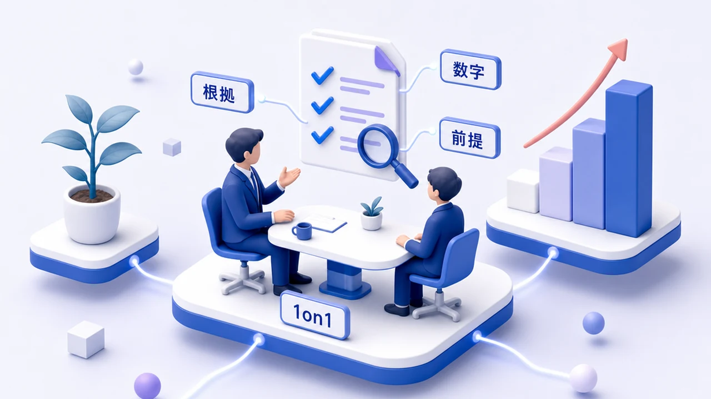
第7章｜4ヶ月目部下のAI成果物の見方・1on1と目標設定・リーダー育成
© 株式会社AI棒 ｜ 章と月の対応は標準の進め方です。受講者の進み具合に合わせて前後します。
カリキュラム（全8章・35レッスン／視聴 約5時間）
© 株式会社AI棒 ｜ カリキュラムは最新のアップデートに合わせて随時更新します。視聴時間は目安です。
全体像｜4ヶ月で「描く → 落とす → 回す」まで
いまの実績は、どこで伸び、どこで詰まっているのか
AI活用の5段階を体験し、自分の業務で壁打ち
自部門の実績データをAIで要因分解
数字の検算と、相関と因果の見分け方
成果物
現状分析レポート
（ボトルネック3つ）
3年後にどの姿を選ぶか、根拠を持って決める
市場・競合を出典付きで調べる
標準・強気・弱気の3シナリオと感度分析
経営・現場・顧客の立場から反論を出させる
成果物
3ヵ年計画のドラフト
（戦略と数値計画）
計画を、現場が毎週追える数字と行動に分解する
KPIツリーで目標を行動指標まで分解
年→四半期→月へ落とし、施策に順位をつける
週次KPIレポートを自動で作る仕組み
成果物
KPIツリー・実行計画表
週次レポートの自動化
課長・メンバーに展開し、経営の承認を取る
課ごとの目標設定と1on1への反映
部下のAI成果物の見方、利用ルール
経営会議用の構成・想定問答・数字の根拠
成果物
経営会議提出版 3ヵ年計画
＋90日実行プラン
毎月の進め方
動画で学ぶ
その月の型を事前に視聴
個人面談 月2回
自部門の資料で講師と作り込む
実務で使う
面談の間に自部門で試す
© 株式会社AI棒 ｜ 各月の題材は、受講者ご本人が扱っている実際の数字・資料を使います（社外秘の扱いは利用ルールに沿って初回に決めます）。
営業部長｜4ヶ月ロードマップ
起点にする
営業の数字
反響
広告・ショールーム別
CL予約・実施
アサインと追客の速さ
物件確定
精査・ラフ提案の日数
請負契約
課別・担当別の転換率
契約単価
提案内容と価格帯
1ヶ月目
営業の現状を数字でつかむ
2ヶ月目
3ヵ年の営業戦略を描く
3ヶ月目
KPI・行動計画に落とす
4ヶ月目
5課で回し、経営に通す
やること
SFの実績を渡し、反響→CL→物件確定→請負の歩留まりを課別・担当別に分解
伸びた月・落ちた月の要因をAIに仮説出しさせ、元データで検算
中古マンション流通・リノベ市場・競合の動きを出典付きで調査
反響数・転換率・単価の前提を変えた3シナリオを作り、感度分析
経営・現場・お客様の立場から反論を出させ、案を絞る
契約件数をKPIツリーで行動指標まで分解
年→四半期→月の目標と、施策の優先順位（効果・費用・難易度）
SFから週次KPIレポートを自動で作る仕組みを作る
課長ごとの目標と、1on1で追う指標を決める
メンバーのAI成果物の確認点と利用ルールを整える
経営会議用に構成・想定問答・数字の根拠をまとめる
貴社の題材
（例）
SF・HubSpotの商談データ
IS課の予約・アサイン実績
直営ショールームと定額制リノベの拡大方針
マーケ課の広告メニュー別実績
課別の転換率・リードタイム
物件精査・ラフ作成にかかる工数
課長会議・1on1の運用
経営会議の提出フォーマット
身につく
こと
AIに目的・前提・制約を渡し、数字の分析を任せて検証できる
戦略の選択肢を比較し、根拠と前提を明示して選べる
計画を、現場が毎週追える数字と行動に分解できる
計画を部下に落とし、進捗を回す仕組みを作れる
成果物
© 株式会社AI棒 ｜ 題材・KPIは当社の想定例です。初回の面談で、部長ご本人の担当範囲と使えるデータに合わせて確定します。
営業部長｜4ヶ月の学習スケジュール（例）
毎週月曜にSFから週次KPIレポートが自動で届き、課長との1on1で同じ数字を追える状態。
© 株式会社AI棒 ｜ 週ごとの内容は進め方の例です。初回の面談で、ご本人の予定と業務の繁閑に合わせて組み直します。
設計部長｜4ヶ月ロードマップ
起点にする
設計・施工の数字
設計
パートナー数とキャパ
見積
標準単価との差
着工
設計開始からの日数
施工
提出物・写真の遅れ
完工・アフター
是正・クレーム件数
1ヶ月目
設計・施工の現状をつかむ
2ヶ月目
3ヵ年の体制と戦略を描く
3ヶ月目
KPI・改善計画に落とす
4ヶ月目
課とパートナーで回す
やること
案件データから件数・リードタイム・見積の乖離・是正件数を課別に分解
どの工程に負荷が集まっているかをAIに整理させ、現場感と照らす
案件数が増えたときどこが先に詰まるかを3シナリオで試算
設計・工事パートナーの数と、内製と外注の割合の方針を比べる
現場・パートナー・お客様の立場から反論を出させる
完工件数・粗利・品質をKPIツリーで分解
見積・図面・提出物チェックのAI化を、効果順に並べる
社内ルールで質疑に答える相談役と、週次の進捗レポートを作る
課長・SVの目標と1on1で追う指標を決める
AIに任せる確認と人が見る確認を分け、承認の流れを決める
経営会議用に構成・想定問答・数字の根拠をまとめる
貴社の題材
（例）
SF・ハウスゲート・楽楽販売の案件データ
課別の担当件数
定額制リノベの完工数増と拠点拡大
工事パートナーのキャパ
標準単価と提出見積の差
設計パートナーからの質疑と社内ルール
是正・クレームの記録
経営会議の提出フォーマット
身につく
こと
案件と工程のデータをAIで整理し、負荷の偏りを数字で示せる
体制の選択肢を、品質・原価・スピードで比べて選べる
品質と原価の目標を、課ごとの改善指標に分解できる
AIと人の役割を分け、品質を落とさず仕組みを回せる
成果物
© 株式会社AI棒 ｜ 題材・KPIは当社の想定例です。定額制リノベの完工数増・拠点拡大は貴社公表情報（2026年10月19日）。初回の面談で担当範囲と使えるデータに合わせて確定します。
設計部長｜4ヶ月の学習スケジュール（例）
設計パートナーからの質疑に社内ルールで答える相談役が動き、週次の進捗レポートで品質と原価の指標を追える状態。
© 株式会社AI棒 ｜ 週ごとの内容は進め方の例です。初回の面談で、ご本人の予定と業務の繁閑に合わせて組み直します。
利用環境とセキュリティ
研修で使うツール
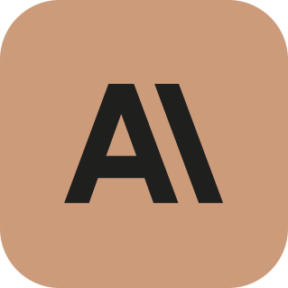
動画の演習も面談での作り込みも、すべてClaudeで進めます。アンケートでの利用は18%のため、初回は基本の操作から始めます。
Claudeを選ぶ理由
理由 1長い資料をまとめて読み込める管理規約・竣工図・過去の計画書など、量の多い資料を一度に渡して整理・分析できる
理由 2往復しながら考えを深めやすい前提を渡して3シナリオを比べ、反対意見を出させる計画づくりに向いている
理由 3資料を持たせた相談役を作れる社内ルールや過去資料を持たせ、課からの質問に答える部署専用の相談役にできる
法人向けプランでは、入力した内容は初期設定でAIの学習に使われません。契約プランと管理者設定は開始前に確認します。
安心して使うための3つのルール
学習に使われない設定をそろえ、お客様の個人情報物件・契約の情報など入力しない情報を社内ルールにします。
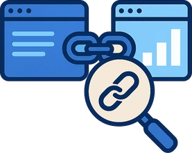
SFやスプレッドシートとAIを連携するときは、どのデータがどこへ送られるかを確認してから進めます。
扱えない数字は加工して使い、課から「これは使っていい？」と聞かれたときに部長が答えられるようにします。
© 株式会社AI棒 ｜ 利用率は事前アンケート（91名・複数回答）。使える機能はClaudeの契約プランと管理者設定で変わるため、開始前に確認します。
ご費用
料金に含まれるもの
動画教材（全8章・35レッスン）視聴 約5時間。期間中はいつでも見直せます
個人面談 月2回（全8回）講師と1対1で、自部門の計画を作り込みます
貴社の業務に合わせた課題設定事前ヒアリングで、題材と使えるデータを確認します
Claudeの環境に合わせた調整契約プランと管理者設定に合わせて手順をそろえます
お申し込み後、すぐに研修の準備を始められます。
© 株式会社AI棒 ｜ 金額はすべて税込。人数が変わる場合も1名25万円（税込）で計算します。
他社のAI研修との違い
© 株式会社AI棒 ｜ 「一般的な研修」は当社が見聞きする典型例で、特定の会社を指すものではありません。
導入の流れと次のステップ
本資料をもとに、受講人数とプラン内容を確定します。人数分のお見積りをお出しします。
申込フォームにご入力ください。お申し込み後、すぐに事前ヒアリングの日程を調整します。
部長ごとの担当範囲、使えるデータ、AIツールの契約を確認し、ロードマップを確定します。
学習システムのID・パスワードを発行し、第1回の個人面談から4ヶ月の研修が始まります。
次のステップ
1受講いただく部長の人数と、お名前をお知らせください
2部門別ロードマップの仮説（担当範囲・KPI例）について、ずれている点をご指摘ください
3研修を始めたい時期をお知らせください
開始時期の目安
© 株式会社AI棒 ｜ 日程は貴社のご都合に合わせて調整します。